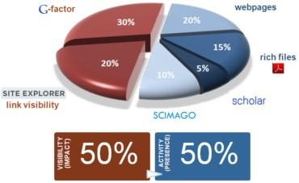

Analysis of Kenyan Webspace using webometric algorithms
ERIC CHOMBA NG'ANG'A
P15/1263/2010
Overview
Problem statement
There is no effective method to analyze and determine the effectiveness and impact academic website's system of websitesLiterature review
Website analysis methods
-
Qualitative methods
Content analysis, focus groups, interviews, referrer analysis, user feedback and audience analysis -
Quantitative methods
Website log analysis, bibliometrics, scientometrics and webometrics
Webometric Ranking of Universities
- Done biannually (Jan, July) by CSIC
- Ranks over 20,000 universities
- Metrics shown : web presence, web impact, openness and excellence
Ranking analytics analytics used
Visibility 50% (link visibility 20% and G-factor 30%), Size (20%) Rich Files (15%), and Scholar (5%) and Scimago (10%)
System development
Iterative Development
High level design
Use Case Model
Level 0 DFD
Level 1 DFD
Iterations
- Data collection
- Data analysis
- Data presentation
Iteration 1
Data collection
Data collection techniques
1. Seach engines
2. Web crawlers
Search engines
- The good
Free (cheap), coverage (shallow web) - The bad
Inconsistent data, different algorithms - The ugly
Minimal coverage (deep web)
Web crawler
Web crawler cont...
- The good Control, control control
- The bad Resource intensive (manpower, time, money, computing), more time to implement,
- Pitfalls Poor coding, Spider traps, Resource usage
Search whole domain,
- Why use crawlers?
- Control
- Content vs URL crawlers
- Scalability and flexibility
Crawler design
Crawler DFD
Crawler Datastore
Crawler architecture

Crawl server
Challenges
-
Authorization
University denied permission to interview ICT staff -
Crawler pitfals
Poor coding of websites, Spider traps
Issues raised
- Title of the project
'Analysis of UoN website' vs 'Analysis of Kenyan Academic Webspace' - Scope of web crawls
Restricting crawls to specific domains